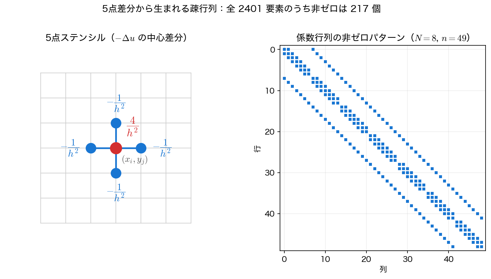
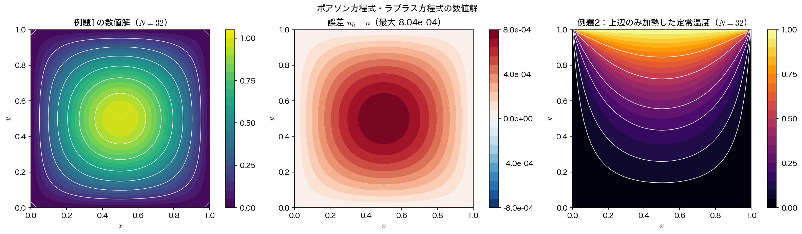

5点差分と疎行列
ポアソン方程式には「時間を進める」という手順がない。境界条件だけを頼りに、領域内のすべての格子点の値を同時に決めなければならない。本ページでは、第7回の中心差分を2次元に拡張して連立1次方程式を組み立て、それを第3回のガウスの消去法で素直に解いてみる。得られる答えは正しい——ただし、少し格子を細かくしただけで手に負えなくなる。その限界を数値で見ることが、このページの本当の目的である。
5点ステンシル
単位正方形 \([0,1]^2\) を各方向 \(N\) 等分し、\(h=1/N\)、格子点 \((x_i,y_j)=(ih,jh)\)（\(i,j=0,\dots,N\)）をとる。数値解を \(u_{i,j}\approx u(x_i,y_j)\) と書く。
\(x\) 方向・\(y\) 方向のそれぞれについて、第7回とまったく同じ中心差分を当てる。
両者を足して \(-\nabla^2u=f\) に代入すれば、各内点 \((i,j)\)（\(i,j=1,\dots,N-1\)）について
が成り立つ。1つの式に5つの格子点しか現れないので、これを5点ステンシル（five-point stencil）と呼ぶ。打ち切り誤差は \(x\)・\(y\) ともに \(O(h^2)\) である。これがそのまま解の誤差の次数になるのは、離散ラプラシアン \(A_h\) の逆行列のノルムが \(h\to0\) で有界にとどまる（最小固有値が \(2\pi^2\) に収束する）からで、整合性だけでなく安定性が要る——第7回・第9回と同じ論法である。以下、全体で空間2次精度として扱う。
この式を \(u_{i,j}\) について解いた形
も覚えておくとよい。\(f=0\) のラプラス方程式なら「各点の値は上下左右4点の平均に等しい」という意味になり、調和関数の平均値の性質の離散版そのものである。次ページの反復法は、この式をそのまま繰り返すだけで作れる。
格子点の番号付けと行列の形
未知数は内点だけの \(n=(N-1)^2\) 個である。これを1本のベクトルに並べるため、\(m=N-1\) とおいて自然順序（natural ordering）
で番号を振る（下の行から順に、左から右へ）。すると5点ステンシルは連立1次方程式 \(Au=b\) になり、第 \(k\) 行には
| 位置 | 列 | 係数 |
|---|---|---|
| 中心 \((i,j)\) | \(k\) | \(+4/h^2\) |
| 左 \((i-1,j)\) | \(k-1\) | \(-1/h^2\) |
| 右 \((i+1,j)\) | \(k+1\) | \(-1/h^2\) |
| 下 \((i,j-1)\) | \(k-m\) | \(-1/h^2\) |
| 上 \((i,j+1)\) | \(k+m\) | \(-1/h^2\) |
の最大5個しか非ゼロが現れない。行列全体では
というブロック三重対角の形になる。\(T\) は \(m\times m\)、\(I\) は \(m\times m\) の単位行列である。
重要なのは、上下の隣接点が行列の中では \(m\) 列も離れた場所に現れることである。\(x\) 方向の隣は番号が1つ違いなので対角のすぐ隣に来るが、\(y\) 方向の隣は \(m=N-1\) 個も離れる。この \(m\) が行列の帯幅（bandwidth）であり、格子を細かくするほど帯は広がっていく。番号付けの都合ひとつが、後の計算量を決めてしまう。

行列 \(A\) の性質もまとめておく。
- 対称：\((i,j)\) と隣の点の関係は互いに同じ係数 \(-1/h^2\) なので \(A^{\mathsf T}=A\)。
- 正定値：固有値は後で示すようにすべて正である。したがって第3回の共役勾配法がそのまま使える。
- 弱対角優位：各行で \(\lvert 4/h^2\rvert \ge \sum\lvert -1/h^2\rvert\)（境界に接する行では真に優位）。これが定常反復法の収束を保証する。
- 疎（sparse）：1行あたり非ゼロは高々5個。\(n\) が \(10^6\) でも非ゼロは \(5\times10^6\) 個で、密行列として持つ \(10^{12}\) 要素とは比べものにならない。
境界条件の扱い
境界に隣接する格子点では、ステンシルの一部が境界にはみ出す。そこは既知の値なので、左辺から右辺へ移項する。たとえば \(j=N-1\)（上辺のすぐ下）の点では \(u_{i,N}\) が既知なので
となる。例題2では上辺が \(u=1\) なので、右辺の該当する行に \(1/h^2\) を足すだけでよい。境界値がすべて \(0\) の例題1では、この移項は何もしないのと同じである。
行列 \(A\) はどちらの例題でも同一で、右辺 \(b\) だけが違う。第7回で見た「同じ演算子、右辺違い」という構図がここでも成り立っている。
直接法で解いてみる——そして限界を見る
組み上がった \(Au=b\) を、第3回のガウスの消去法（部分ピボット選択つき）でそのまま解いてみよう。結果は正しく、誤差は理論どおり \(O(h^2)\) で減っていく。

問題は計算の手間である。密行列としてガウスの消去法を適用すると、
- メモリ：\(n^2\) 個の倍精度実数 \(=8n^2\) バイト \(=O(N^4)\)
- 演算量：\(n^3/3=O(N^6)\)
となる。\(N\) を2倍にすると未知数は4倍、メモリは16倍、演算量は64倍である。実際に走らせた結果と、そこから外挿した見積もりを並べる。
| \(N\) | 未知数 \(n\) | 帯幅 \(m\) | 行列のメモリ | 演算量 \(n^3/3\) | 最大誤差 | 誤差比 |
|---|---|---|---|---|---|---|
| 4 | 9 | 3 | 0.00 MB | \(2.4\times10^{2}\) | \(5.3029\times10^{-2}\) | — |
| 8 | 49 | 7 | 0.02 MB | \(3.9\times10^{4}\) | \(1.2951\times10^{-2}\) | 4.095 |
| 16 | 225 | 15 | 0.39 MB | \(3.8\times10^{6}\) | \(3.2190\times10^{-3}\) | 4.023 |
| 32 | 961 | 31 | 7.05 MB | \(3.0\times10^{8}\) | \(8.0358\times10^{-4}\) | 4.006 |
| 64 | 3969 | 63 | 120 MB | \(2.1\times10^{10}\) | （未実行） | |
| 128 | 16129 | 127 | 1.94 GB | \(1.4\times10^{12}\) | （未実行） | |
| 256 | 65025 | 255 | 31.5 GB | \(9.2\times10^{13}\) | （未実行） |
誤差比は \(4.095\to4.023\to4.006\) と \(4\) に収束しており、5点差分が空間2次精度であることが確かめられる。一方で、\(N=128\)——2次元としてはまだ粗い格子——ですでに行列だけで 2 GB、演算量は \(10^{12}\) に達する。\(N=256\) では 31.5 GB でメモリに載らない。
帯行列として扱えばどうか
ピボット選択をしなければ（\(A\) は正定値なので実際に不要である）、消去の過程で非ゼロが帯の外にはみ出すことはない。帯だけを保存する専用のソルバを使えば、メモリは \(O(nm)=O(N^3)\)、演算量は \(O(nm^2)=O(N^4)\) まで落ちる。\(N=256\) なら 133 MB・\(4\times10^9\) 演算で、これは現実的である。
しかしそれでも問題は残る。帯の内側は元々ゼロだった要素が消去の過程で次々と非ゼロに変わる——第3回で見た fill-in である。\(A\) の非ゼロは1行あたり5個しかないのに、消去後は1行あたり \(m\) 個に増えてしまう。3次元になれば帯幅は \(O(N^2)\) になり、\(O(N^7)\) の演算量で完全に破綻する。疎であることを最後まで活かせないのが直接法の本質的な弱点である。
これに対して次ページの反復法は、\(A\) を配列として持つことすらしない。必要なのは「ある点の値を上下左右4点から計算する」ことだけで、メモリは \(O(n)\)、1反復の演算量も \(O(n)\) である。
サンプルコード
5点差分による行列の組み立てと、ガウスの消去法による求解、格子細分による誤差の測定を1本にまとめる。
#include <stdio.h>
#include <stdlib.h>
#include <math.h>
/* 第10回 ポアソン方程式: 5点差分 + 直接法（ガウスの消去法）
-(u_xx + u_yy) = 2 pi^2 sin(pi x) sin(pi y) on (0,1)x(0,1)
u = 0 on the boundary, 厳密解 u(x,y) = sin(pi x) sin(pi y)
目的: (1) 5点差分が空間2次精度であることを確認する
(2) 未知数 n = (N-1)^2 に対して直接法が O(n^3) / O(n^2) で
破綻することを数値で見る */
static const double PI = 3.14159265358979323846;
static double f_src(double x, double y) { return 2.0*PI*PI*sin(PI*x)*sin(PI*y); }
static double u_exact(double x, double y) { return sin(PI*x)*sin(PI*y); }
/* 部分ピボット選択つきガウスの消去法（第3回）。A は n x n の行優先配列 */
static void gauss_solve(int n, double *A, double *b, double *x)
{
for (int k = 0; k < n; k++) {
int p = k;
for (int i = k+1; i < n; i++)
if (fabs(A[(size_t)i*n+k]) > fabs(A[(size_t)p*n+k])) p = i;
if (p != k) {
for (int j = k; j < n; j++) {
double t = A[(size_t)k*n+j];
A[(size_t)k*n+j] = A[(size_t)p*n+j];
A[(size_t)p*n+j] = t;
}
double t = b[k]; b[k] = b[p]; b[p] = t;
}
for (int i = k+1; i < n; i++) {
double m = A[(size_t)i*n+k] / A[(size_t)k*n+k];
if (m == 0.0) continue;
for (int j = k; j < n; j++) A[(size_t)i*n+j] -= m * A[(size_t)k*n+j];
b[i] -= m * b[k];
}
}
for (int i = n-1; i >= 0; i--) {
double s = b[i];
for (int j = i+1; j < n; j++) s -= A[(size_t)i*n+j] * x[j];
x[i] = s / A[(size_t)i*n+i];
}
}
/* N 分割の格子で解いて最大誤差を返す。
fp != NULL なら解と厳密解を格子全体（境界を含む）にわたって書き出す */
static double solve_direct(int N, FILE *fp)
{
int m = N - 1; /* 各方向の内点数 */
int n = m * m; /* 未知数の総数 */
double h = 1.0/N, h2 = h*h;
double *A = calloc((size_t)n*n, sizeof(double));
double *b = malloc((size_t)n * sizeof(double));
double *x = malloc((size_t)n * sizeof(double));
if (!A || !b || !x) { fprintf(stderr, "out of memory\n"); exit(1); }
/* 自然順序の番号付け: 格子点 (i,j) -> k = (j-1)*m + (i-1) */
for (int j = 1; j <= m; j++) {
for (int i = 1; i <= m; i++) {
int k = (j-1)*m + (i-1);
A[(size_t)k*n + k] = 4.0/h2;
if (i > 1) A[(size_t)k*n + (k-1)] = -1.0/h2;
if (i < m) A[(size_t)k*n + (k+1)] = -1.0/h2;
if (j > 1) A[(size_t)k*n + (k-m)] = -1.0/h2;
if (j < m) A[(size_t)k*n + (k+m)] = -1.0/h2;
b[k] = f_src(i*h, j*h); /* 境界値が 0 なので移項は不要 */
}
}
gauss_solve(n, A, b, x);
double emax = 0.0;
for (int j = 1; j <= m; j++)
for (int i = 1; i <= m; i++) {
double e = fabs(x[(j-1)*m + (i-1)] - u_exact(i*h, j*h));
if (e > emax) emax = e;
}
if (fp)
for (int j = 0; j <= N; j++)
for (int i = 0; i <= N; i++) {
int inner = (i > 0 && i < N && j > 0 && j < N);
double u = inner ? x[(j-1)*m + (i-1)] : 0.0; /* 境界値は 0 */
fprintf(fp, "%.10e %.10e %.10e %.10e\n",
i*h, j*h, u, u_exact(i*h, j*h));
}
free(A); free(b); free(x);
return emax;
}
int main(void)
{
printf("=== 5点差分 + ガウスの消去法（直接法）===\n");
printf(" N 未知数 n 帯幅 行列のメモリ 演算量 n^3/3 最大誤差 誤差比\n");
printf("--------------------------------------------------------------------------\n");
FILE *fp = fopen("poisson_solution.dat", "w"); /* 作図用（N=32 の解だけ書き出す）*/
if (fp == NULL) { perror("poisson_solution.dat"); return 1; }
fprintf(fp, "# x y u u_exact\n");
double prev = 0.0;
for (int N = 4; N <= 32; N *= 2) {
int n = (N-1)*(N-1);
double mem = (double)n*(double)n*8.0/1048576.0;
double flop = (double)n*(double)n*(double)n/3.0;
double e = solve_direct(N, (N == 32) ? fp : NULL);
printf("%5d %9d %6d %11.2f MB %12.2e %12.4e", N, n, N-1, mem, flop, e);
if (prev > 0.0) printf(" %9.3f", prev/e);
printf("\n");
prev = e;
}
fclose(fp);
printf("\n=== 格子を細かくしたときの見積もり（実行はしない）===\n");
printf(" N 未知数 n 行列のメモリ 演算量 n^3/3\n");
printf("------------------------------------------------\n");
int Ns[] = {64, 128, 256};
for (int t = 0; t < 3; t++) {
double n = (double)(Ns[t]-1)*(Ns[t]-1);
printf("%5d %10.0f %11.1f MB %12.2e\n", Ns[t], n, n*n*8.0/1048576.0, n*n*n/3.0);
}
printf("\n誤差比が 4 に近づくので、5点差分は空間2次精度 O(h^2) である。\n");
printf("一方、直接法のメモリ O(n^2) と演算量 O(n^3) は格子の細分に耐えられない。\n");
return 0;
}
コンパイル・実行:
実行結果
=== 5点差分 + ガウスの消去法（直接法）===
N 未知数 n 帯幅 行列のメモリ 演算量 n^3/3 最大誤差 誤差比
--------------------------------------------------------------------------
4 9 3 0.00 MB 2.43e+02 5.3029e-02
8 49 7 0.02 MB 3.92e+04 1.2951e-02 4.095
16 225 15 0.39 MB 3.80e+06 3.2190e-03 4.023
32 961 31 7.05 MB 2.96e+08 8.0358e-04 4.006
=== 格子を細かくしたときの見積もり（実行はしない）===
N 未知数 n 行列のメモリ 演算量 n^3/3
------------------------------------------------
64 3969 120.2 MB 2.08e+10
128 16129 1984.7 MB 1.40e+12
256 65025 32259.0 MB 9.16e+13
誤差比が 4 に近づくので、5点差分は空間2次精度 O(h^2) である。
一方、直接法のメモリ O(n^2) と演算量 O(n^3) は格子の細分に耐えられない。
\(N=32\) の1ケースで演算量が \(3\times10^8\)、これは1秒足らずで終わる。しかし \(N=256\) は \(9\times10^{13}\) 演算——同じ計算機で数時間かかるうえ、そもそも 31.5 GB の行列が置けない。2次元では格子を数百分割しただけで直接法が使えなくなるという事実は、実感として覚えておく価値がある。
可視化
poisson_direct.c は \(N=32\) の解を poisson_solution.dat（1列目 \(x\)、2列目 \(y\)、3列目 数値解、4列目 厳密解）に書き出す。格子点は境界も含めて \((N+1)^2\) 個あり、\(x\) が内側のループなので、読み込んで \((N+1)\times(N+1)\) に reshape するだけで2次元配列に戻る。
2次元データの描き方
1次元の折れ線と違い、2次元では contourf（等高線の塗り分け） か pcolormesh を使う。np.loadtxt が返すのは \((N+1)^2\) 行の縦長の表なので、reshape で格子の形に直すのが第一歩である。列の並べ方（\(x\) と \(y\) のどちらが内側のループか）を C 側と合わせておかないと、転置された図になる。
import numpy as np
import matplotlib.pyplot as plt
d = np.loadtxt("poisson_solution.dat")
m = int(round(np.sqrt(len(d)))) # 格子は (N+1) x (N+1)
x, y, u, ue = (col.reshape(m, m) for col in d.T)
fig, (ax1, ax2) = plt.subplots(1, 2, figsize=(10.5, 4.2))
c1 = ax1.contourf(x, y, u, levels=20, cmap="viridis")
fig.colorbar(c1, ax=ax1)
ax1.set_title("numerical solution $u_h$")
c2 = ax2.contourf(x, y, u - ue, levels=20, cmap="Reds") # 誤差は全域で同符号
fig.colorbar(c2, ax=ax2)
ax2.set_title(f"error $u_h - u$ (max {np.abs(u - ue).max():.2e})")
for ax in (ax1, ax2):
ax.set_xlabel("$x$")
ax.set_ylabel("$y$")
ax.set_aspect("equal")
fig.tight_layout()
fig.savefig("poisson_solution.png", dpi=150)
plt.show()
実行:
誤差の図では色が全面同じ符号になり、最大値が表の \(8.0358\times10^{-4}\) と一致する。本文の図はこれに例題2の温度分布を加えた3枚組だが、poisson_direct.c が解いているのは例題1 だけなので、ここで描けるのは左と中の2枚である。
まとめ
- 5点ステンシル \(\dfrac{4u_{i,j}-u_{i-1,j}-u_{i+1,j}-u_{i,j-1}-u_{i,j+1}}{h^2}=f_{i,j}\) が離散化の中心。打ち切り誤差 \(O(h^2)\)。
- 自然順序 \(k=(j-1)m+(i-1)\)（\(m=N-1\)）で番号を振ると、\(A\) はブロック三重対角・対称・正定値・帯幅 \(m\) の疎行列になる。\(y\) 方向の隣接点が \(m\) 列離れることが帯幅を決める。
- 境界値は右辺へ移項する。行列 \(A\) は問題によらず同じで、右辺だけが変わる。
- 直接法（密）はメモリ \(O(N^4)\)・演算量 \(O(N^6)\)。\(N=128\) で 2 GB、\(N=256\) で 31.5 GB となり実行不能。帯ソルバでも \(O(N^4)\) どまりで、fill-in によって疎性を活かしきれない。
- 数値解の誤差比は \(4.095\to4.023\to4.006\) で、空間2次精度が確認できる。この精度は解法によらず離散化だけで決まる。
- 次ページでは、行列を一切作らずに同じ答えを得る反復法に移る。